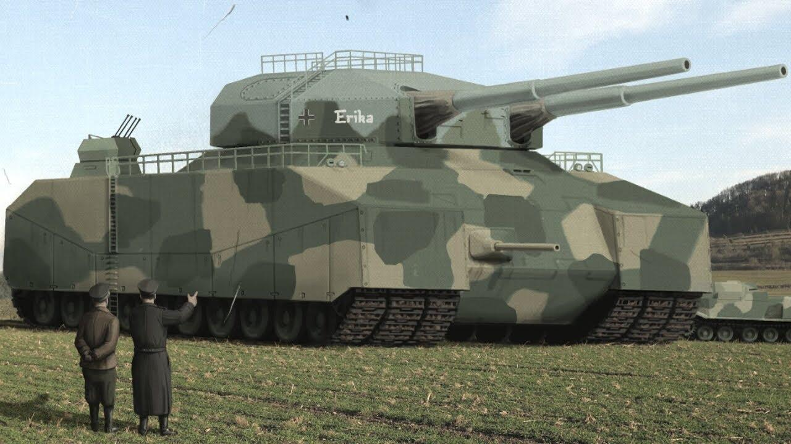
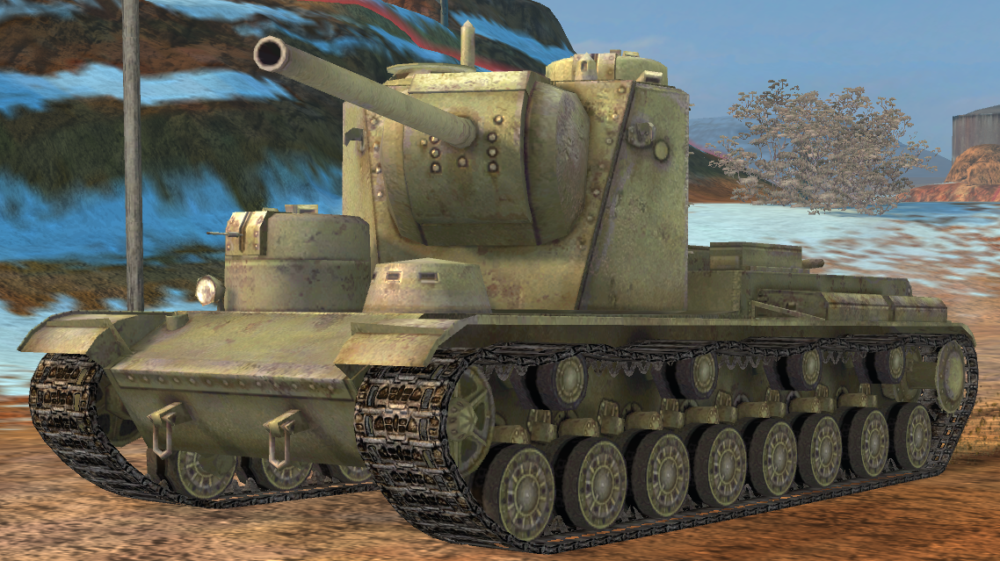

Panzer VIII Maus
El tanque superpesado alemán. Con 188 toneladas, es el vehículo blindado más pesado jamás construido. Solo se terminaron dos prototipos antes de que la guerra acabara. Era tan pesado que destrozaba carreteras y no podía cruzar puentes normales. Su blindaje era impenetrable para la mayoría de las armas de la época, pero su excesivo peso lo convertía en un objetivo lento y poco práctico.

Landkreuzer P. 1000 Ratte
Una auténtica locura naval en tierra firme. Hitler aprobó el diseño de este "crucero terrestre" de 1.000 toneladas, equipado con cañones navales propios de un acorazado de bolsillo. El proyecto fue cancelado por Albert Speer en 1943 al darse cuenta de que sería un blanco inmenso, lento y requeriría una tripulación de más de 40 hombres para operar sus sistemas.

Tanque Soviético KV-5
La respuesta soviética a los blindados alemanes pesados. Este diseño de la serie Kliment Voroshilov pesaba unas 100 toneladas y tenía un diseño asimétrico con múltiples torretas operadas por diferentes artilleros. El proyecto fue cancelado apresuradamente cuando la fábrica de Leningrado tuvo que ser evacuada de emergencia por el avance de las tropas alemanas en 1941.